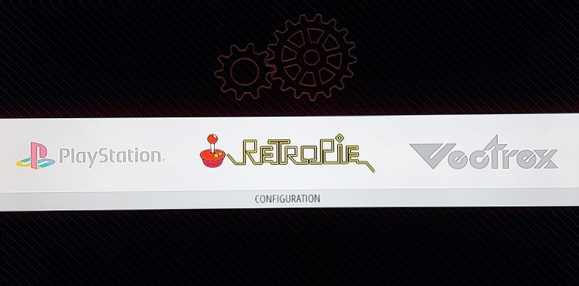
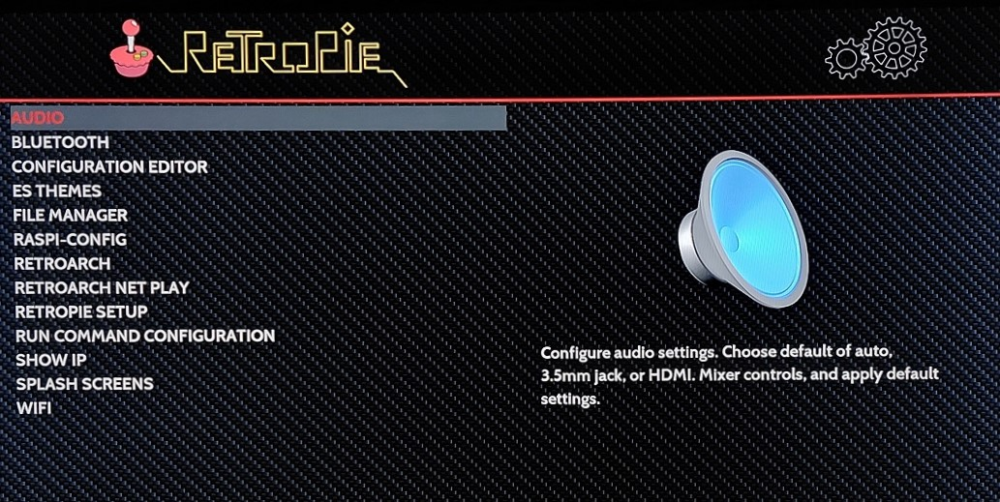
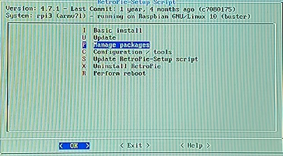
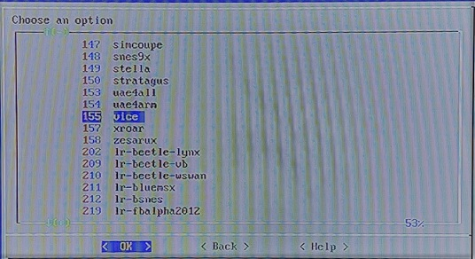
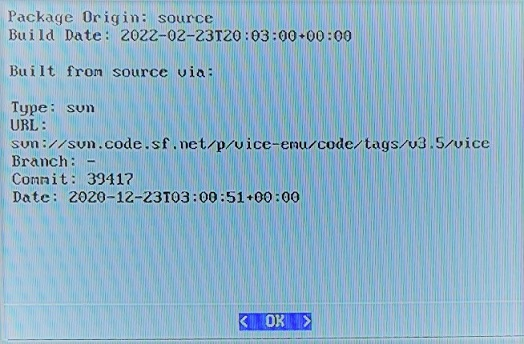
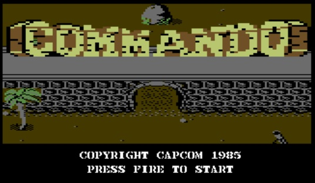

When Retropie is first installed and users look through the list of supported platforms, the omission of one crucial micro computer is immediately noticeable. The Commodore 64 is the most popular machine of the 8 bit era, a micro built around a slightly modified 6502 chip (the 6510) and with two powerful custom chips - the VIC, used for producing sprite graphics and scrolling effects, and the legendary SID - the Sound Interface Device - a sound chip that surpassed the audio capabilities of every other machine of the era.
Despite it's CPU being slightly slower than the competing BBC Micro, the C64s large memory and custom hardware made it the ideal plaform for game production. Along with the graphically inferior but cheaper ZX Spectrum the C64 dominated the computer games scene until the arrival of the 16 bit Atari ST and Commodore Amiga in the latter part of the 80s.
In short, no emulation system should be without the ability to run Commodore 64 games.
Fortunately there is a way to get those Commodore games running on the Pi, and this brief walkthrough guide explains how to do it. It is assumed that Retropie is installed and running.
1. Navigate left or right until the main menu until you reach the Retropie graphic. Select this and you should be sent into the main Retropie configuration menu.
2. On the menu screen, scroll down and select the Retropie Setup option.
This is where things appear to get tricky - the front-end shuts down and is replaced with a plain Linux (in this case Raspbian/Debian) option screen. Click okay on the Notice screen to continue.
In Linux programs are often called packages and we should be able to find a C64 emulator from the optional package list. First thing to do is actually to select the Update option and run it. This basically installs any Linux updates from across the Internet automatically and your screen will fill up with walls of scrolling text as each installed component is listed. It can take a bit of time but usually completes without incident.
3. Once updates are installed, bring back the Setup menu and scroll down to the option Manage Packages. Select this and a list of optional components for RetroPie are shown. The main Commodore 64 emulator is called Vice and is located somewhere in that list. Select Vice and it will ask if you want to install from a pre-compiled binary or the source files. The source file option is slower as it means the Vice application has to be compiled into an executable. However the latest source version is likely to be a bit more recent than the binary, so in this case source is selected.
4. Some time may pass while the screen fills up with further walls of Linux information. Eventually it will finish and the process only needs to be done once. Move down to Package version information and check the details. If everything is okay, select Back a few times on the menu until you reach the RetroPie setup menu shown above. Select Perform reboot and okay.
5. Once Retropie reboots, look at the network share ROMs directory. A new folder has appeared - C64. Copy any C64 game roms to this folder, then perform the menu/quit/reboot operation as described in the installation page.
The Commodore 64 icon should now appear on the main menu screen and you can play your games.
Commando running on the emulator